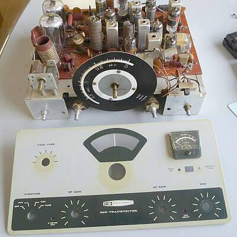
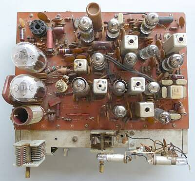
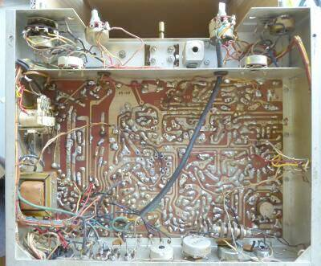
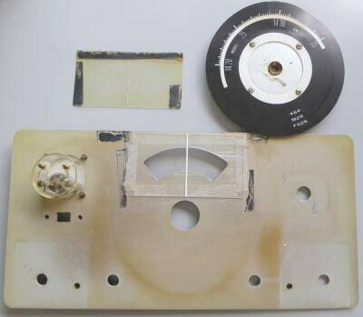
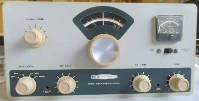
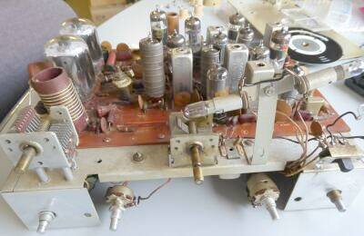
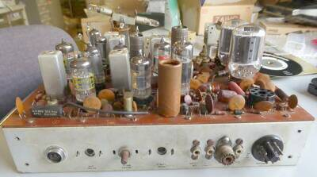

 |
外ケースから中身を取り出し、フロントパネルを外した状態です
日焼けの様子がよくわかるフロントパネルです（それ相応なお歳です）
メイン・ダイヤルも、ＰＬの熱で変形が見られます
ＰＣＢボード１枚で構成という、これ以上のローコスト化はないような設計です
そのためでしょう、２１ＭＨｚ帯用のモデルはありません |
 |
大型の真空管２本が送信ファイナル管です
その上のＧＴソケットは、オプションの１００ＫＨｚマーカー取り付けの場所です
下に見えるコイルが、タンクコイルで、終段同調はプレート側だけです
２．３０５ＭＨｚ４ポール・クリスタル・フィルタが右下に見えます
その下に見えるクリスタルが、ヘテロダイン用の１８．２７５ＭＨのものです（いずれも、ＨＣ-６/Ｕ型）
ご覧のように、１４球で構成されています |
 |
シャーシ下側
シンプルですが、非常によく考えられた構造・配置がとられています
上中ほどに見えるＩＦＴ風なものは、ＶＦＯ発振コイル
仕切りの板についてる２つの物体は、いずれもボリュームで、フロントパネルからマイナスドライバを差し込んで調整できるようになっています
（ＶＯＸディレイと、Ｓメータゼロ点調整） |
 |
フロントパネル（裏）とメイン・ダイヤル
ダイヤルの左に見えるのがオリジナルのカーソルの刻印されたダイヤル窓カバー
本来両面テープのはずが、ビニルテープで止まっていました
ＰＬの熱による変形や汚れがひどいので、ｔ＝1mmの透明塩ビ板をカットし、白のカッティング・シートの端っこを少しカットしたもので少々太いカーソルとしました
元々、読み取り精度は５KHｚ程度ですから気になりません！
両面テープできちんと四方を止めました
メイン・ダイヤルのPL発熱による変形だけは手が付けられません
よく見ると、このダイヤルに機種名が書かれています
|
 |
シャーシに、フロントパネルを取り付けたところ |
 |
フロント側 |
 |
リア側
電源は、ＨＰ-１０という純正もあるようですが、SBシリーズなどと共通のはず
AC電源だと、HP-２３など・・・一応調べてみなくては
左端の丸いコネクタがマイク入力端子です
ボリューム軸は、ファイナル・バイアス調整用 |
|
ＨＰ－２３Bが手持ちにあるはずで、通電は少し落ち着いてから（そうだ、ＳＢ-１０２の面倒も見なくては！？）
その前に電気的なチェックをしなくてはいけませんね（いきなりの加電は、怖い！） |